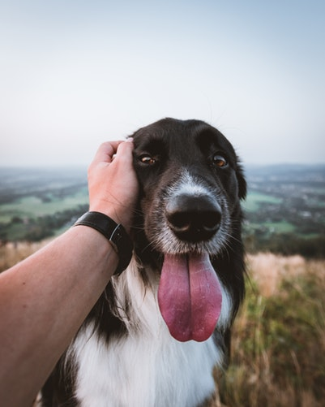

Бордер-колли умны, инстинктивно стремятся к работе и хорошо поддаются дрессировке. Из них получаются отличные компаньоны: преданные, внимательные и чувствительные. Любя свою семью, эти собаки готовы выполнять любые команды. Они настоящие друзья человека и хотят чувствовать свою значимость для него.
Бордер-колли очень подвижны, любят спортивные игры. Они отлично подходят для аджилити, флайбола, фрисби. Если их приучать с детства, также очень любят плавать. Обратите внимание, что сильнейший врожденный инстинкт пастуха может быстро перерасти в опасную привычку преследовать других животных, если это не пресекать. Бордер-колли готовы гонять все, что движется. Машины не являются исключением. Поэтому им следует дать понять, что машины уж точно «не в их компетенции». Дисциплинарная дрессировка и спорт очень желательны для этой собаки.
Каждый хозяин мечтает видеть свою собаку здоровой, активной и жизнерадостной.
А, как известно, основа здоровья — это правильное, полноценное и сбалансированное питание. Даже если вы приобретаете самые свежие и качественные продукты, покупаете витамины и минеральные добавки, без биохимической лаборатории вы не сможете определить точную питательную ценность еды, приготовленной вами в домашних условиях. Вот почему PEDIGREE® разработал специальное приложение, которое поможет вам оценить, как рацион, которым вы кормите своего питомца, соответствует его потребностям.
Правильное питание в первый год жизни щенка во многом определяет, насколько здоровым и радостным будет ваш щенок в будущем. Заботясь о здоровье вашего питомца, PEDIGREE® рекомендует комбинирование сухих и влажных рационов, которое позволяет в полной мере использовать преимущества и тех, и других. Подробнее об этом вы можете прочитать в статье.
- Очень толковая собака
- «Заводная» собака, не переносящая ограничений активности
- Очень предана семье и всячески старается ее оберегать
Рост: 50–56 см
Возраст: 12–14 лет
Вес: 25–30 кг
Наличие в семье еще одной собаки, которая может составить компанию, несомненно, порадует бордер-колли. Однако, как пастушья собака, колли может направить свои инстинкты на маленьких домашних животных, не давая им покинуть территорию, на которой, по их собственному мнению, должны находиться подопечные. Владельцам частных домов следует ограничить территорию пребывания своей собаки, особенно ночью, иначе соседская живность может также стать объектом преследования или неуемной опеки.
Бордер-колли не подойдет вам, если вы не собираетесь регулярно заниматься с собакой. Поскольку бордер-колли быстро растут и чрезвычайно активны, они, как правило, не подходят семьям с маленькими детьми и пожилым людям. Идеальный хозяин — спортивный человек, любящий «вылазки» на природу или занятия кинологическим спортом.
У бордер-колли обычная шерсть, для ухода за которой достаточно расчесывания 3 раза в неделю.
Собаки данной породы будут хорошо себя чувствовать в отдельном дворике, а еще лучше — если рядом есть поле или лес. Если держать бордер-колли взаперти, она становится чрезвычайно деструктивной и тратит всю свою бесконечную энергию на лай и порчу имущества. Содержание в квартире допускается, но только при условии длительных прогулок и хороших физических нагрузок.
Чтобы бордер-колли была в форме и чувствовала себя счастливой, она должна много гулять с хозяином как минимум каждое утро и вечер, а еще лучше — каждый раз, когда у него есть свободное время.